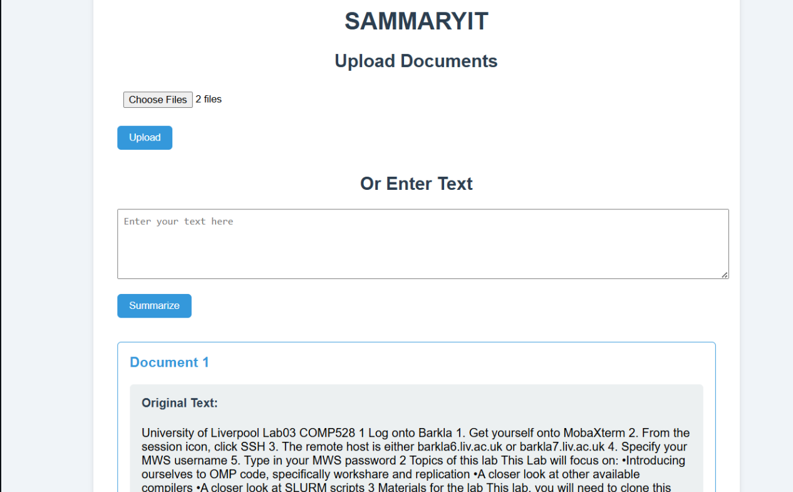
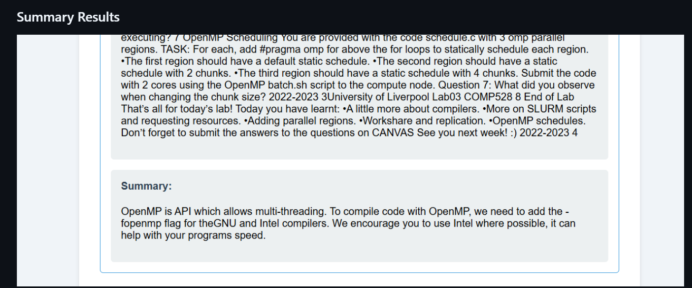
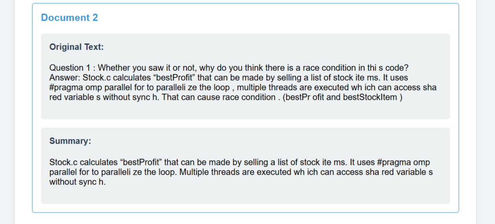
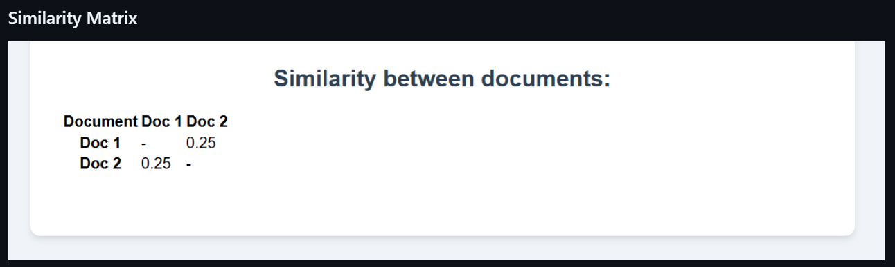

Problem statement
Organisations often spend significant time manually reviewing lengthy documents, extracting key information, and comparing multiple files to identify overlapping or redundant content. This process is time-consuming, difficult to scale, and prone to inconsistencies.
Business Objective: Automate document summarisation and comparative analysis using NLP and transformer-based models to reduce manual review effort, accelerate information retrieval, and identify content similarities across large volumes of unstructured documents.
Approach
I built an end-to-end text analysis pipeline that extracts text from PDF, DOCX, and TXT files using PyPDF2 and python-docx. I cleaned and preprocessed the extracted text, applied TF-IDF vectorization and cosine similarity to measure document similarity and identify overlapping or duplicate content, and used the BART (large-CNN) transformer model to generate concise summaries. Finally, I integrated these steps into an interactive interface where users can upload documents and view summaries and comparison results.
Tools & techniques
PythonPyPDF2TF-IDF
Key findings & result
The project demonstrated how BART-based summarisation can generate concise summaries of lengthy documents, reducing manual review effort. TF-IDF and cosine similarity helped identify overlapping and redundant content, while the integrated pipeline streamlined document extraction, summarisation, and comparison. The results highlighted the potential of NLP and transformer models to automate repetitive text-processing tasks. However, summary quality depended on the input text and model performance, and TF-IDF could miss semantic similarities between documents with different wording.
Execution screenshots




Project repository
View project on GitHub ↗